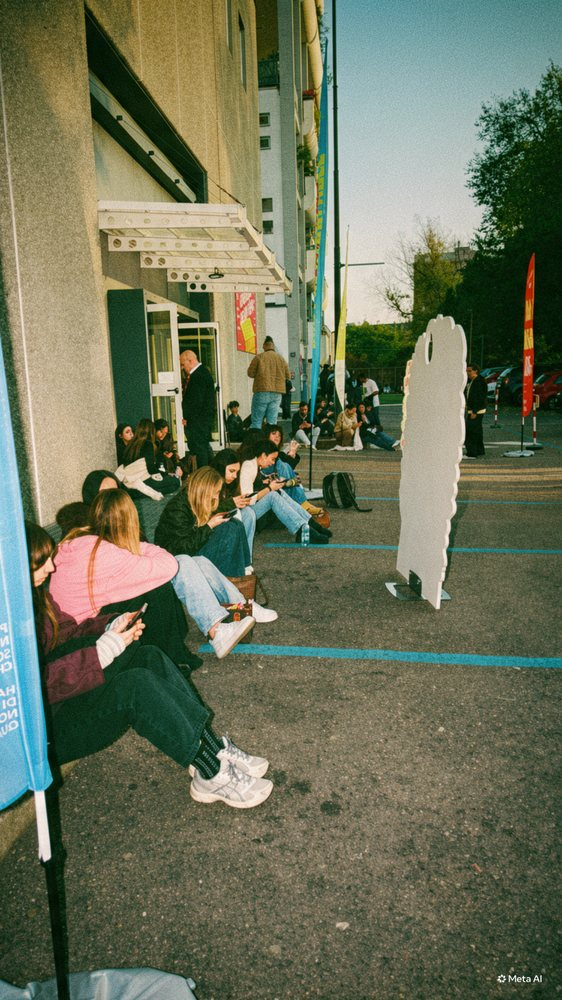

Campaign report · Yous Conference 2026
Campaign report · Yous Conference 2026
October 31st, 2026 · Italy
Jesus Goes Viral: 646 young people sharing their faith.
646young people took part in the outreach
80+churches represented
316pieces of content created
652Kviews in the first 17 hours
On October 31st, we had the opportunity to lead a two-hour activation at Yous Conference 2026, a national youth event hosted by Sabaoth Church, bringing together 850 young people from over 80 churches.
At 3 PM, we introduced “Jesus Goes Viral”, a challenge inviting young people to create and share content about their faith on their own social media platforms.
We provided creative formats and examples to help them communicate the Gospel in an engaging and authentic way. Just two hours later, everyone published their videos simultaneously.
The results
In just one hour, 316 pieces of content were created, many by young people sharing their faith publicly for the very first time.
Within the first 17 hours, those videos generated over 652,000 views, spreading the message of Jesus across their digital communities.



The results on the big screen · Young people creating content · Sharing their faith online
Watch some of the videos
I’ve included a few examples of the videos, with English subtitles, so you can see what this looked like in practice. Tap a video to watch it.
What’s next
A new approach to evangelism is beginning to take shape.
We’re exploring how local events can become hubs for content creation, equipping young people to take the Gospel beyond church walls and into their own digital communities.
But our heart doesn’t stop at reaching people online. We want those who encounter the Gospel to have an opportunity to respond, connect with someone and ultimately become part of a local church where they can grow as disciples of Jesus.
We’re still developing this model, but we’re expectant about what lies ahead.
Our vision is to see a generation of Christian creators rather than passive consumers: young people equipped and activated to share their faith with the world around them.
Pray with us
Please keep us in your prayers as we continue exploring and developing this approach.
Thank you for being part of the journey!